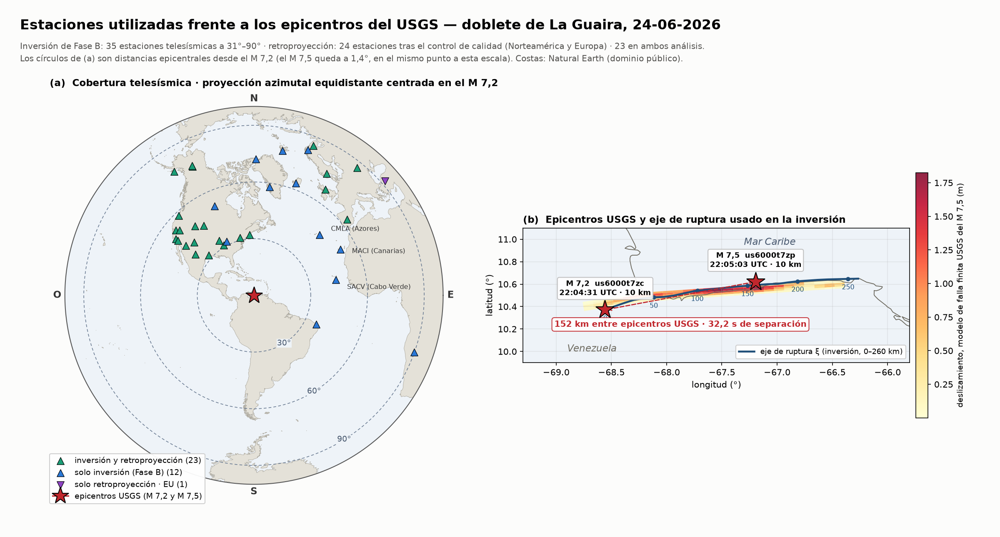

Estudio telesísmico de fuente · 24 de junio de 2026
Análisis del terremoto de La Guaira en bytesy su complejidad físico-matemática
Análisis de la fuente del evento complejo del 24-jun-2026: la imagen de las dos rupturas, la inversión de la tasa de momento y las pruebas de robustez que las sostienen. Cada método se expone desde sus fundamentos, con la física que hay detrás y las cifras del dato que lo alimenta.
Las cifras de esta página describen el análisis de la fuente sísmica —datos, sismogramas y modelado de la ruptura—. No son cifras de víctimas ni de daños.
Artículos en preparación. Las cifras aquí expuestas son preliminares y pueden variar en la versión revisada.
Tres lecturas independientes del mismo terremoto —retroproyección, inversión de la tasa de momento y distribución de réplicas— convergen en una misma descripción de la fuente: dos acumulaciones de energía separadas por un tramo sin liberación rápida de momento.
Dónde ocurrió, y para qué es esta página
El 24 de junio de 2026, a las 22:04 hora local, el límite entre las placas Caribe y Suramericana rompió frente a la costa central de Venezuela. No fue un terremoto, sino dos: un M 7,2 y, 32 segundos más tarde, un M 7,5 a unos 150 km de distancia. En medio quedó un tramo que no liberó momento con rapidez.
Que fueran dos no es un supuesto de catálogo: es el resultado que sostiene todo lo demás. El modelo de falla finita del USGS hace deslizar unos 243 km de traza, y esos 243 km no son el recorrido de un frente único, sino la envolvente de dos rupturas sucesivas — la radiación de alta frecuencia del M 7,2 no se aleja más de ~35 km de su epicentro. Tres observables parcialmente independientes convergen: la retroproyección, la inversión de la tasa de momento y el hueco de réplicas.
La estructura que rompió es la misma familia de fallas de rumbo dextral que atraviesa el norte del país de oeste a este y que, más al oriente, se prolonga en la falla de El Pilar, responsable del sismo de Cariaco de 1997 y del terremoto de 1766. El régimen de transpresión en el oriente de Venezuela da el contexto tectónico de toda la secuencia.
Por qué existe esta página
Un artículo científico expone resultados: enseña la figura y la cifra, y comprime el camino en una cita. Quien quiera comprobarlo tiene que reconstruir ese camino por su cuenta. Esta página hace lo contrario —expone el camino—: qué es una función de Green y por qué el sismograma es lineal en la tasa de momento; cómo se pasa de un momento de fuerza al momento sísmico; por qué un doble par de fuerzas no hace girar el terreno; qué significa apilar ondas de estaciones a 8 000 km y qué puede fingir ese apilado. Las deducciones van completas, con su álgebra y sus diagramas, no citadas.
La intención es que sirva de referente teórico-práctico de los artículos: del Paper 1 —la fuente: el doblete visto por retroproyección e inversión— del Paper 2 —la directividad y el papel relativo del campo cercano en el daño del litoral central— y de los que sigan. Cada página de método corresponde a una pieza del análisis publicado, y el orden es deliberado: primero los fundamentos, después cada método, y al final lo que se hizo para no engañarse: los controles, los descartes y el cómputo.
No sustituye a los artículos ni los resume: los sostiene por debajo. Quien solo quiera el resultado puede quedarse con el enunciado de arriba; quien quiera discutirlo encontrará aquí de dónde sale cada paso. Y para ver el dato en movimiento —los epicentros de cada agencia, la retroproyección y las curvas camino–tiempo— está el visor del doblete; para el efecto en el terreno, el mapa de daños. Ambos, con el resto de las herramientas, se listan al final.
Sismofísica básica
Las ideas mínimas para leer el resto: qué se rompe (la falla y el rebote elástico), qué ondas salen (P y S), cómo se mide su tamaño (momento sísmico y magnitud) y su geometría (mecanismo focal), y por qué La Guaira sintió tan fuerte (directividad). Con definiciones y diagramas.
Leer los fundamentos — definiciones y diagramas → Ampliación — del momento de fuerza (torque) al momento sísmico → Ampliación avanzada — de una fuerza puntual a la esfera focal la deducción completa, sobre el capítulo 2 de Sismofísica Básica del Prof. L. D. Beauperthuy Urich (2008), con enlace al capítulo originalEstaciones y redes
| Análisis | Estaciones | Cobertura | Redes |
|---|---|---|---|
| Inversión de tasa de momentotasa de momento m(ξ, t) | 32 | Δ 31°–90°azimut 1°–356° (casi completo) | CI · II · IM · IU |
| Retroproyecciónimagen de las dos fuentes | 2418 Norteamérica + 6 Europa | Δ 31°–78° | BK · CI · II · IM · IU |
| Velocidad de rupturaarreglo denso, ventana fina | 127 | Δ 31°–86° | 17 redes: AK AT AV CC CI CN II IM IU IW LD MX OO SC TX US UU |
continentes
Norteamérica, Europa y el Atlántico/Sudamérica aportan cobertura azimutal.
azimut cubierto
Prácticamente el círculo completo alrededor del epicentro. El mismo criterio, aplicado a la red local, se puede recorrer estación por estación en la consola del gap azimutal.
arreglo del sur (Chile)
Evaluado y excluido por criterios de calidad: ninguna estación alinea y solo 3 de 31 superan S/N ≥ 3. No entra en los cálculos.

¿Qué es la API FDSN?
Un estándar web que permite el acceso uniforme a datos sismológicos —catálogos de terremotos y formas de onda— desde centros de datos de todo el mundo. Por FDSN se obtuvieron los registros telesísmicos y el catálogo de réplicas de esta secuencia. Venezuela cuenta con su propio servicio FDSN, diseñado por Rommel Contreras: catalogosismicovenezuela.sigeos.org — con su API documentada y un extremo FDSN de eventos para consumo por programa.
Retroproyección · imagen de las dos fuentes
Un arreglo telesísmico lejano, usado como telescopio sísmico: alineando y apilando la onda P de decenas de estaciones se mapea dónde y cuándo radía la ruptura. Así aparecen las dos acumulaciones de energía —M 7,2 al oeste y M 7,5 al este, separadas ~149 km y ~32 s— y el hueco entre ellas, con controles sintéticos que descartan que sea un artefacto.
Leer el método completo — retroproyección (delay-and-stack) →El mismo resultado, manipulable: el visor del doblete superpone los epicentros de cada agencia, la imagen de retroproyección y las curvas camino–tiempo sobre el mismo mapa.
Funciones de Green
Sismogramas sintéticos de Syngine / AxiSEM (modelo ak135f_2s), con física completa P + pP + sP; cada uno pedido al servicio de EarthScope.
Green en total
Cada una de 450 muestras (180 s a 0,4 s). ~22 MB en disco.
barrido de profundidad
Green a 5 profundidades, con 99,8 % de peticiones correctas al servicio.
muestras sintéticas
Solo en la prueba de profundidad (4 313 × 450 muestras).
malla extendida
Green extra para la prueba de padding de bordes.
El operador de inversión
matriz G por profundidad
15,7 millones de elementos · 11,4 millones no nulos.
ensamblajes
Una matriz por profundidad → ~68 millones de coeficientes.
inversiones no-negativas
6 profundidades × 5 desfases, todas con la restricción m ≥ 0.
muestras ajustadas
Formas de onda observadas ajustadas en simultáneo.
Relocalización de réplicas · próximo paso
El siguiente salto de precisión: relocalización relativa de la secuencia con hypoDD (doble diferencia, en su Fortran nativo). Cancela los errores comunes de trayecto y resuelve la posición relativa de cada réplica con precisión de decenas a centenas de metros — apretando las dos acumulaciones y el hueco. La maquinaria ya está montada y validada (test sintético: horizontal ×7 → ~0,5 km); falta el insumo real: los picks P/S de FUNVISIS. Para revisarlos a mano cuando lleguen está el revisor de piques, y la distribución espacial de la secuencia frente al daño observado se puede recorrer en el mapa de daños.
Leer el método completo — fundamento, diagramas y paso a paso →Verificación y controles
Reproducción exacta del ensamblaje
El operador reconstruido devuelve el mismo resultado, con |m − m_l| = 0 y VR = 21,15 %.
Robustez en tres ejes independientes
La ruptura en dos acumulaciones con hueco se mantiene al variar la malla, la longitud de ventana y la profundidad.
Profundidad de la fuente
La varianza explicada es máxima en 5–10 km, y el hueco resulta insensible a la profundidad (f = 0,13–0,85 %).
Un arreglo evaluado y excluido
El arreglo del sur (Chile) se probó y se excluyó por relación señal/ruido y por geometría.
La física, interactiva
Detrás de las cifras hay física que puedes manipular. Mueve los controles —velocidad de ruptura β = Vr/c, longitud de falla, energía radiada— y observa en vivo la directividad (el pulso corto y de gran amplitud que recibe La Guaira al frente de la ruptura), el balance de energía y la polarización de la onda S:
Es un ejemplo de muestra, no un resultado. El modelo es una fuente lineal cinemática: la falla se representa como una fila de subfuentes puntuales que se encienden una tras otra a la velocidad Vr, y en cada receptor se suma lo que llega de todas. La directividad aparece sola, porque no es más que efecto Doppler aplicado a una fuente que se desplaza. Las amplitudes van en unidades relativas, y no intervienen registros reales, funciones de Green ni el resultado de la inversión: sirve para ver a mano el mecanismo que las secciones 04–06 miden con los datos. Las cifras del caso real están en el §08.
{kind=link}
Cómputo, código y reproducibilidad
Esta página expone el método y el resultado. Todo lo relativo a la ejecución —el equipo empleado, los tiempos medidos de cada etapa, la paralelización de la inversión y su comprobación con CUDA en un servidor con GPU, y las pruebas de regresión frente al código original— se documenta aparte, para no mezclar el rendimiento del cálculo con el contenido sismológico.
repositorio de cómputo
Hardware comparado (estación de trabajo frente a servidor con dos RTX 3060), tiempos medidos por etapa, paralelización de la Fase B y la validación numérica contra el código original. De acceso restringido mientras los artículos están en preparación.github.com/rommeljose/Aira_geofisica
depósito de reproducibilidad
Formas de onda telesísmicas, funciones de Green, mallas de retroproyección y resultados canónicos. El DOI de Zenodo está reservado y se activará con la publicación.
Ese repositorio conserva además el rastro de una auditoría interna de septiembre de 2026: un intento previo de acelerar el cálculo con GPU reportó mejoras que nunca se habían medido, una revisión independiente lo desmontó y las cifras se retiraron. Los tres documentos —la auditoría, la bitácora con su aviso de corrección y la remediación posterior— se conservan sin reescribir, porque un registro así solo sirve si no se corrige a posteriori.
Los datos de entrada proceden de servicios abiertos —FDSN (EarthScope/IRIS y SIGEOS-FUNVISIS) y Syngine/AxiSEM— y los registros de movimiento fuerte de FUNVISIS se distribuyen bajo solicitud a esa institución, por lo que no forman parte de este material.
Herramientas y páginas de apoyo
Alrededor de este análisis hay una familia de páginas y servicios de creación propia —visores, mapas, réplicas del catálogo y servicios de datos— que sostienen la parte práctica del trabajo. Varias se citan en su sitio a lo largo de esta página; aquí van todas juntas, con lo que aporta cada una. El índice completo, incluidas las que no tratan de sismología, está en la entrada «Mis páginas web públicas» del blog Tecnología Cumanesa.
Visores y mapas de la secuencia
Epicentros según cada agencia, imagen de retroproyección, curvas camino–tiempo y directividad, sobre un mismo mapa. Es la contraparte manipulable de las secciones 04 y 06.
paradojasismica.sigeos.orgMapa GIS con los daños observados, las réplicas de FUNVISIS, la clasificación Copernicus EMS y los reportes ciudadanos. Es el terreno sobre el que se discute el Paper 2.
sismolaguaira.sigeos.orgLa secuencia en profundidad junto a las trazas de Boconó y San Sebastián, con la inversión del momento. Va embebida en la página de relocalización (sección 07).
replicas-3d-laguaira.sigeos.orgRevisión manual, sismograma a sismograma, de las llegadas P y S. Es el paso que hoy bloquea la relocalización relativa con hypoDD.
revisor-piques-laguaira.pages.devDatos y servicios
Copia consultable del catálogo oficial, con los eventos de la secuencia de La Guaira. De aquí sale el catálogo de réplicas que usa el análisis.
catalogosismicovenezuela.sigeos.orgEl mismo catálogo en el formato estándar FDSN, pensado para consumo por programa. Es el servicio propio que se menciona en el recuadro FDSN.
funvisis-fdsn.rommeljose.workers.devMapa nacional con los datos públicos de FUNVISIS, actualizado cada cinco minutos.
sismos.sigeos.orgDocumentación del servicio que recoge y ordena los reportes de la población tras el sismo; la consulta sobre esa misma base está en reportes-terremoto.rommeljose.workers.dev.
rommeljose.github.io/reportes-terremotoLa red sísmica de emergencia
Mapa editable de la red temporal: estaciones, fuerzas de tarea y réplicas en vivo. De esta base salen las trazas de fallas activas del mapa de la sección 01.
redemergenciasismica.sigeos.orgConsola que muestra, estación por estación, cuánto cierra cada instalación el hueco de cobertura. Es el mismo razonamiento de la sección 03, aplicado a la red local.
rommeljose.github.io/Gap-Red-de-Emergencia-Terremoto-de-la-GuairaContexto tectónico regional · blog Tecnología Cumanesa
La prolongación oriental del mismo sistema de rumbo dextral que rompió en 2026.
tecnologiacumanesa.blogspot.com · jul 2026El régimen tectónico que enmarca toda la secuencia: por qué el desplazamiento no es puramente horizontal.
tecnologiacumanesa.blogspot.com · jul 2026El precedente instrumental más cercano, y el caso en que la escala longitud–magnitud sí funciona.
tecnologiacumanesa.blogspot.com · jul 2026La memoria histórica del mismo límite de placas, tres siglos antes de los sismógrafos.
tecnologiacumanesa.blogspot.com · jul 2026Licencia y autoría
CC BY-NC-SA 4.0© 2026 Rommel Contreras, Lcdo. Físico — Academia de Geohistoria del Estado Sucre (AGHES). El contenido propio de este sitio —los textos, las deducciones, los diagramas y mapas en SVG, la simulación interactiva y el código que los genera— se publica bajo Creative Commons Atribución-NoComercial-CompartirIgual 4.0 Internacional. Puede copiarse, adaptarse y reutilizarse con tres condiciones: citar la autoría y enlazar a la fuente (BY), no hacer uso comercial (NC), y distribuir cualquier obra derivada bajo esta misma licencia (SA). Para un uso comercial hace falta permiso escrito del autor. No se aplica CC0 ni ninguna dedicación al dominio público: la atribución no es opcional.
Qué no cubre esta licencia
- Los artículos científicos. El Paper 1 (la fuente) y el Paper 2 (la directividad y el campo cercano) no forman parte de este sitio y se publicarán con sus propios términos. Aquí está la base físico-matemática que los sostiene y el material de apoyo, no su contenido.
- El capítulo del Prof. Luis Daniel Beauperthuy Urich. La ampliación «De una fuerza puntual a la esfera focal» desarrolla el capítulo 2 de Sismofísica Básica (2008). El capítulo original es suyo; esta exposición y sus posibles errores son de este sitio, y no lo comprometen.
- Datos de terceros, que conservan la licencia de su origen: línea de costa de Natural Earth (dominio público); parámetros de fuente y modelo de falla finita del USGS/NEIC (dominio público); sismogramas sintéticos de Syngine/AxiSEM (EarthScope); formas de onda y catálogos de los servicios FDSN de EarthScope-IRIS y SIGEOS-FUNVISIS.
- Los registros de movimiento fuerte de FUNVISIS, que esa institución distribuye bajo solicitud y que no se incluyen aquí en ninguna forma.
Cómo citar
Contreras, R. (2026). Análisis del terremoto de La Guaira en bytes, y su complejidad físico-matemática. Academia de Geohistoria del Estado Sucre (AGHES). https://bytes.sigeos.org/
Las páginas y servicios enlazados en la sección 11 son también de creación propia y se rigen por esta misma licencia, salvo indicación en contrario en cada uno. El texto legal completo está en el fichero LICENSE del repositorio.
Estudio telesísmico de la fuente —imagen de las dos rupturas, inversión de la tasa de momento y su validación en profundidad, ventana y bordes— realizado con datos abiertos (FDSN / EarthScope) y sismogramas sintéticos de Syngine (AxiSEM).